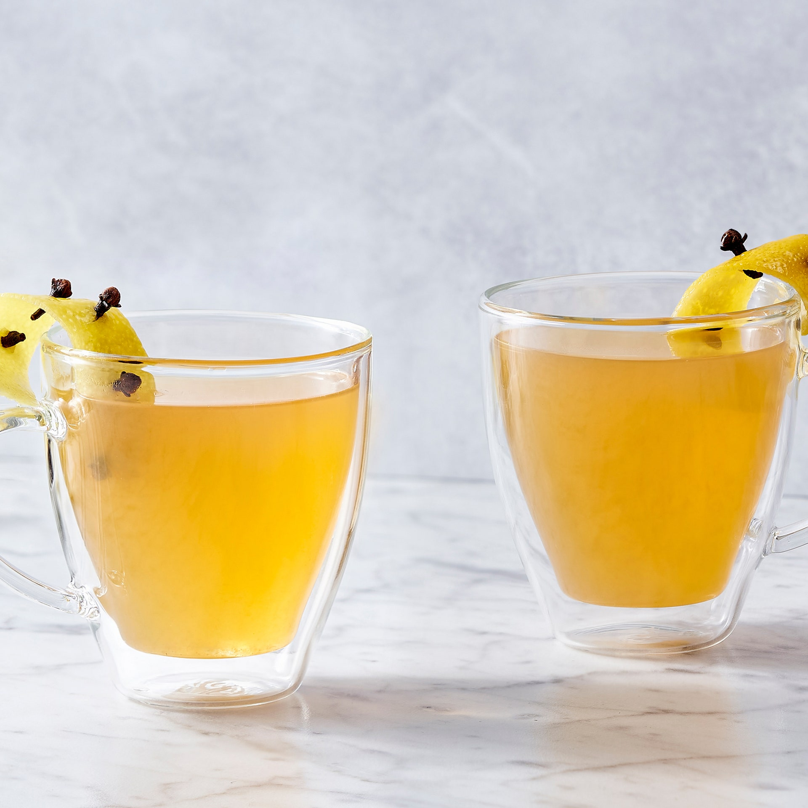

Whiskey Cocktail Recipes
Boulevardier

Boulevardier
- 2 ounces bourbon
- 1 ounce Campari
- 1 ounce sweet vermouth (preferably Antica Formula)
- A lemon twist
- Combine in mixing glass filled with ice.
- Stir until glass is very cold - about 1 minute.
- Strain into chilled cocktail glass filled with fresh ice.
- Garnish with a twist of lemon.
Old Fashioned
Old Fashioned
- 1 teaspoon simply syrup
- 2 ounces quality rye or bourbon
- 2 dashes Angostura Bitters
- 1 maraschino cherry
- 1 slice of orange
- In old-fashioned glass, combine simple syrup and bitters.
- Fill glass halfway with ice, then stir about a dozen times.
- Add enough ice to fill glass.
- Squeeze orange peel over glass to extract oils, add peel to glass, and add whiskey.
- Stir just until drink is cold and alcoholic bite has softened, about a dozen times.
- Garnish with cherry, swizzle stick, and straw.
Sazerac
Sazerac
- 1 cube or 1/2 teaspoon sugar
- 2 ounces rye whiskey
- 4 dashes Peychaud Bitters
- Splash of absinthe
- Lemon peel/twist
- In old-fashioned glass, add ice and set aside.
- In another, combine sugar, bitters, and water.
- Muddle until sugar is completely dissolved.
- Add rye whiskey, fill with ice, and stir well, about 15 seconds.
- From first glass, discard ice, then add absinthe.
- Holding glass horizontally, turn it so that absinthe completely coats the interior.
- Discard any excess. Strain contents of second glass into chilled glass.
- Twist lemon peel directly over drink to release essential oils, and serve.
Manhattan
Manhattan
- 2 ounces rye or bourbon whiskey
- 1/2 ounce sweet vermouth
- 1/2 ounce dry vermouth
- 2 dashes Angostura or orange bitters
- Maraschino cherry or lemon twist to garnish
- In mixing glass or cocktail shaker filled with ice, combine whiskey, vermouth, and bitters.
- Stir well, about 20 seconds, then strain into cocktail glass.
- Add cherry or twist lemon peel directly over drink to release essential oils, and serve.
Leatherette (courtesy of barmini)
Leatherette
- Equal Parts...
- Spanish brandy
- Sherry
- Sweet vermouth
- Rye whiskey
- Combine over ice shard and stir for 30 seconds.
- Add a dash or two of lavendar bitters.
- *Optional - add spirits to leather bota bag and age for ~10 days.
Paper Plane
Paper Plane
- 1 ounce Amaro Nonino
- 1 ounce Aperol
- 1 ounce bourbon
- 1 ounce fresh lemon juice
- Combine into shaker with ice.
- Shake vigorously for ~20 seconds.
- Strain into coupe glass.
Whiskey Highball
Whiskey Highball
- 2 ounces bourbon or rye
- 4 ounces club soda, chilled
- Twist of lemon, optional
- Stir gently to combine.
Hot Toddy Variation

Hot Toddy Variation
- 6 ounces strong black tea
- 1 ounce bourbon
- 1 ounce Cognac
- 1/2 ounce Benedictine
- 2 dashes Angostura bitters
- Nutmeg and cinnamon stick
- Lemon wheel studded with cloves
- Stir tea, bourbon, Cognac, Bénédictine, and bitters in a mug; grate a little nutmeg over.
- Garnish with lemon and cinnamon.
"Irish" Coffee
"Irish" Coffee
- 1/4 cup chilled heavy cream
- 2 teaspoons sugar
- 1.5 ounces bourbon or rye whiskey
- 3/4 cup hot, strong coffee
- Whip heavy cream with sugar until it just holds stiff peaks.
- Pour Irish whiskey into a mug or Irish coffee glass and add enough of the coffee to fill it three-fourths full.
- Spoon whipped cream on top.